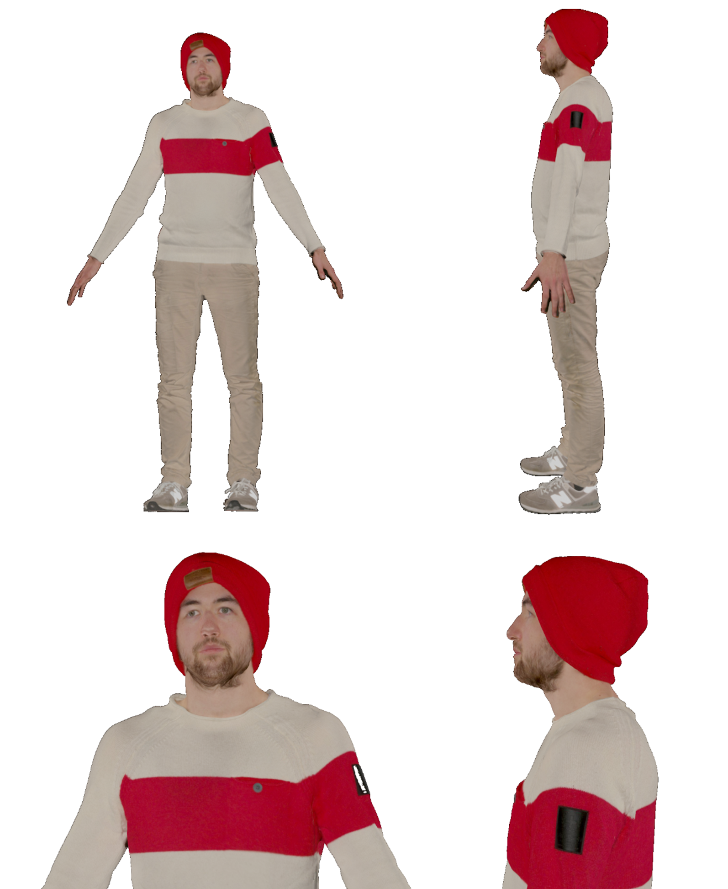
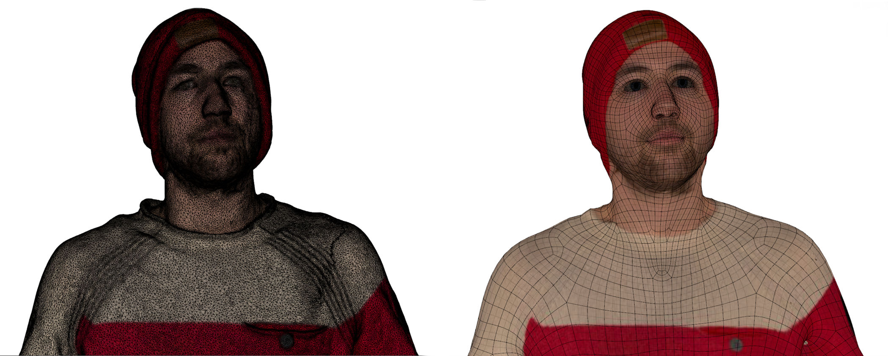
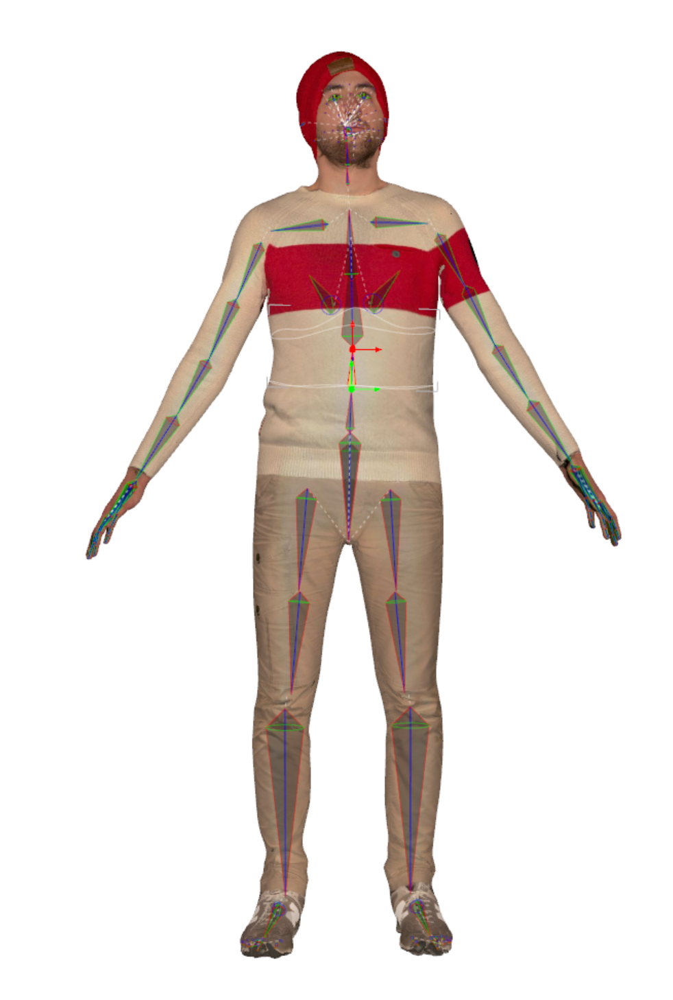

Media Project
In recent years, several advances in virtual, augmented and mixed reality (VR/AR/MR) have been made leading to new communication possibilities.
After the latest advances in the field of extended reality (XR): the combination of virtual, augmented and mixed reality,
these technologies are an important topic in research.
Therefore, the creation of high quality 3D avatars for a more realistic experience is getting more relevance.
Existing approaches like AvatarMe are able to reconstruct photo realistic 3D faces from a single image with an increasing level of detail.
However this is not enough to get a complete digital representation of a person.
The main goal of this media project is to establish a four-phase process for developing 2-3 high-quality 3D avatars with the purpose of using them for XR research. The process commences with the scanning and recording of individuals to generate full-body 3D models of them. Subsequently, a rigging process is initiated, which involves creating a skeletal animation for the digital models to enable precise control of their movements. Following rigging, a lip sync method is implemented, ensuring that the avatar's lip movements align accurately with spoken words, employing an audio stimulus as input.
Three methods were used to capture 3D scans to create our avatars, namely Artec Leo 3D scanner, PolyCam app and Meshroom. After analizing the quality of scan data acquired from the different approaches mentioned before, we decided to use the scans created by the Artec Leo 3D scanner to scan the subjects for this project owing to the superior quality of scans in terms of mesh and texture quality.
The process can be described as follows:
Rigging of the 3D models:
The rigging process of a 3D model involves creating a digital skeleton, known as a rig, that enables animators to control the movement and deformation of characters, creatures, and other 3D objects.
In this stage of the project, we tested four rigging technologies: Adobe Mixamo, Blender, Autodesk Maya and the combination of R3DS Wrap and DAZ Studio. The fact of working with a high resolution mesh as the one achieved after post-processing within Artec Studio makes it complicated to further apply rigging technologies to the model, as it consists of millions of polygons normally containing noise, artifacts and missing parts.
Wrapping is the process of turning a 3D scan into an animated character after converting it into a low-poly mesh with a user or animation-friendly topology as shown in the following picture:
This process was done using a wrapping software called R3DS Wrap, which allows wrapping a base figure around the body scan to finally
export a normalized version of the mesh. To do this, correspoding points are added in exactly the same order for the software to know, which
body parts correspond to each other:

Once the desired result is achieved, the geometry can be finally exported as an OBJ file to further add the rig inside DAZ Studio.
This includes not only the skeleton, but it turns it operational with several accessories, such as clothing, hair, poses or animations:
Lip sync technologies:
Lip syncing in animation refers to the art of synchronization of audio dialogue to the movement of the lips. During the course of this project, four lip sync technologies were employed.
Development of a Unity Demo Case:
As part of this media project, a small demo showcase had to be developed using Unity in order to compare the different approaches in terms of model quality. Furthermore, the virtual avatars should be respectively posed in the scene simulating to have a short dialog between each other.


The main goal of this media project is to establish a four-phase process for developing 2-3 high-quality 3D avatars with the purpose of using them for XR research. The process commences with the scanning and recording of individuals to generate full-body 3D models of them. Subsequently, a rigging process is initiated, which involves creating a skeletal animation for the digital models to enable precise control of their movements. Following rigging, a lip sync method is implemented, ensuring that the avatar's lip movements align accurately with spoken words, employing an audio stimulus as input.
Project characteristics
:- Title: Development of a machine learning supported pipeline to create high-quality 3D avatars for AR/VR/MR research
- Team: 2 people
- Duration: March 2022 - September 2022
- Project partner: TU Ilmenau
Implementation
Scanning process:Three methods were used to capture 3D scans to create our avatars, namely Artec Leo 3D scanner, PolyCam app and Meshroom. After analizing the quality of scan data acquired from the different approaches mentioned before, we decided to use the scans created by the Artec Leo 3D scanner to scan the subjects for this project owing to the superior quality of scans in terms of mesh and texture quality.

Artec's post-processing result of the 3D scan
- Scanning and obtaining a full 360° view of the subject with the 3D scanner
- Transfer data to Artec Studio 16
- Apply Global registration by geometry to align all frames
- Remove noise to get rid of outliers and noise
- Sharp fusion of the meshes
- Remove irrelevant data and inconsistencies
- Apply fast simplification to simplify the mesh
- Apply textures and perform adjustments if needed
- Export the 3D model as an OBJ file
Rigging of the 3D models:
The rigging process of a 3D model involves creating a digital skeleton, known as a rig, that enables animators to control the movement and deformation of characters, creatures, and other 3D objects.
In this stage of the project, we tested four rigging technologies: Adobe Mixamo, Blender, Autodesk Maya and the combination of R3DS Wrap and DAZ Studio. The fact of working with a high resolution mesh as the one achieved after post-processing within Artec Studio makes it complicated to further apply rigging technologies to the model, as it consists of millions of polygons normally containing noise, artifacts and missing parts.
Wrapping is the process of turning a 3D scan into an animated character after converting it into a low-poly mesh with a user or animation-friendly topology as shown in the following picture:

Mesh comparison: Scan vs. R3DS wrap
Point correspondence: Base figure vs. 3D Scan

DAZ Rig
- UI Game Menu with Poke Animation
- Beerpong Game in the scene
- Unity setup:
- XR Interaction Toolkit
- Shader Graph
- Universal Render Pipeline (URP)
- Navigation: Continuous movement (Touchpad), Teleportation (Trigger-Button) or natural movement
Lip sync technologies:
Lip syncing in animation refers to the art of synchronization of audio dialogue to the movement of the lips. During the course of this project, four lip sync technologies were employed.
- VOCA
- Voice Operated Character Animation
- Deep Learning model
- Faces Learned with an Articulated Model and Expresions (FLAME)
- Trained from the heads of more than 4000 people
- It only works with a 3D model of a head
- ThreeLS
- Simple live speech driven lip sync available as a Unity package
- Three blend shapes: kiss, lips closed and mouth open
- Calculation of differences between the spectrum of vowels and consonants of the input audio file
- Unity Rhubarb Lip Syncer
- Unity Editor script
- List of Shape Keys following the Blender Rhubarb nomenclature
- Possibility to add facial expressions, including blinking of the eye and eyebrow movements
- Blender Rhubarb Lip Sync
- Speech recognition
- PocketSphinx: open source speech recognition system, that recognizes the English dialogue accurately
- Phonetic: recognizes the phonetics of the audio input focusing individual syllables
- Most efficient and effective method because of its ability to create 3D animations based on the audio input
Development of a Unity Demo Case:
As part of this media project, a small demo showcase had to be developed using Unity in order to compare the different approaches in terms of model quality. Furthermore, the virtual avatars should be respectively posed in the scene simulating to have a short dialog between each other.
Demo scene in Unity